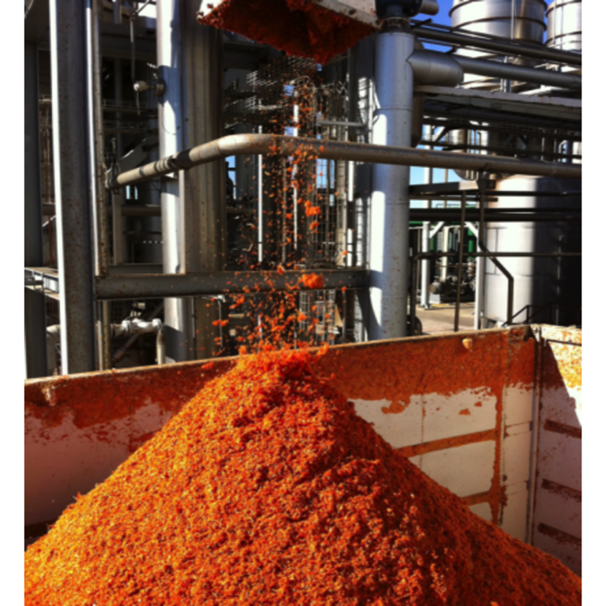

16 Tomasa

Subproducto del Procesamiento del Tomate: Actividad antiplaquetaria
Iván Palomo, Eduardo Fuentes, Marcelo Alarcón, Anibal Concha
TOMASA, subproducto del Procesamiento del Tomate: Actividad antiplaquetaria.
Palomo I 1,2, Fuentes E1,2, Alarcón M1,2 y Concha A3.
1, Centro de Investigación en Trombosis, Facultad de Ciencias de la Salud; 2, Programa de Envejecimiento en Envejecimiento Saludable, Universidad de Talca, Chile; 3, Centro de Estudios de Alimentos Procesados.
1, Centro de Investigación en Trombosis, Facultad de Ciencias de la Salud; 2, Programa de Envejecimiento en Envejecimiento Saludable, Universidad de Talca, Chile; 3, Centro de Estudios de Alimentos Procesados.
Autor para correspondencia: ipalomo@utalca.cl
16.1 Introducción
En los últimos años se ha producido un incremento significativo en la incidencia y prevalencia de las enfermedades cardiovasculares (ECV; infarto agudo de miocardio, enfermedad cerebrovascular y trombosis arterial periférica) (A. S. Go et al., 2014, I. F. Palomo et al., 2006). Las ECV representan alrededor del 30% de las defunciones mundiales (World Health Organization. Informe sobre la salud en el mundo, 2002), con un incremento relativo a través del tiempo, producto del envejecimiento de la población (C. F. Jackson and N. K. Wenger, 2011) y de los factores de riesgos cardiovascular (FRCV), como la diabetes, hipertensión arterial, tabaquismo, dislipidemias y obesidad (L. A. Bazzano et al., 2003, A. Esteghamati et al., 2006, G. I. Palomo et al., 2007, W. Wang et al., 2006), los cuales son desencadenantes de las lesiones ateromatosas (H. González-Navarro et al., 2007).
En el proceso aterosclerótico la comunicación plaqueta/endotelio y plaqueta/leucocito es importante dado el carácter inflamatorio de la lesión vascular; factor desencadenante de la erosión o rotura de la placa ateromatosa (Y. Huo et al., 2003, P. Seizer et al., 2008). La aterosclerosis ya no se considera solamente una enfermedad debida a la pérdida de la homeostasis lipídica, sino que contempla la participación de numerosos componentes inflamatorios celulares y moleculares en todas sus etapas; desde la lesión temprana a la formación de una placa vulnerable (E. Corrado et al., 2010). Por lo general, las lesiones ateromatosas presentan un marcado infiltrado leucocitario, principalmente monocitos (macrófagos), células T, células dendríticas y neutrófilos. Estas células secretan moléculas que contribuyen a la aparición y progresión de la aterosclerosis en el sitio de lesión endotelial (M. Gómez et al., 2009, N. Matijevic et al., 2011, D. A. Steeber and T. F. Tedder, 2000). La inflamación es un paso clave entre los FRCV y la aterosclerosis, y sus complicaciones en la alteración biológica arterial (P. Libby et al., 2009, J. T. Willerson and P. M. Ridker, 2004). Por su parte, las plaquetas facilitan el crecimiento de la placa ateromatosa, proceso que contribuye al desarrollo de la enfermedad tanto en modelos animales como en humanos (S. Massberg et al., 2002, S. Penz et al., 2005).
Dado el aumento de las ECV y de la población mundial, se crea la demanda por fuentes de alimentos que contribuyan a la prevención de ECV y a una mejor calidad en la salud de las personas, es decir, es necesario el desarrollo de alimentos funcionales y nutracéuticos que cumplan una función adicional a la nutrición. En el último año, el mercado global de alimentos funcionales se estimó en US $69,45 billones, y se espera que la tasa de crecimiento anual sea de 8%, por lo que el año 2020 el mercado tendría un valor de US$110,21 billones. En este contexto, nuestros estudios han demostrado el rol protector cardiovascular de la alimentación saludable, la que incluye preferentemente frutas y verduras. Entre estas últimas, destaca el tomate (Solanum lycopersicum L.), principal hortaliza de fruto en el mundo, y de alto consumo como producto fresco y procesado (pasta, jugo y deshidratado), con una significativa capacidad para contribuir a la disminución de las ECV a través de su actividad antitrombótica (E. J. Fuentes et al., 2012).
Más de 30 millones de toneladas de tomates se procesan anualmente en todo el mundo para producir tomates enlatados, ketchup, jugo de tomate, salsa y muchos otros productos. La región del Maule, Chile, concentra cerca del 66% de la producción nacional de tomate industrial, lo que representa cerca de 600 mil toneladas de tomate de proceso cada año. Dados los altos volúmenes de tomate que se procesan anualmente, se generan cerca de 18 mil toneladas del subproducto industrial del proceso de tomate denominado tomasa (conformada por piel y semillas), producidas en su mayor parte en las empresas Sugal Chile y Agrozzi, ambas presentes en la Región del Maule. Hoy en día, la utilidad de la tomasa se reduce solo a ser vendida a muy bajo precio (CLP $7/kg) o regalada para consumo animal. Adicionalmente, el residuo no consumido por los animales, causa contaminación del terreno agrícola ya que no hay depósitos específicos para su eliminación (Marcos Del Valle et al., 2006). A pesar de su subutilización, de acuerdo a nuestros estudios hemos observado que la tomasa presenta actividad antitrombótica aproximadamente dos veces más potente que el tomate (E. Fuentes et al., 2013b).
En vista de lo anteriormente descrito (alta prevalencia de ECV, crecimiento de la población y subutilización de una posible fuente alimentaria) y con base en investigaciones previas de nuestro grupo de investigación (http://www.thrombosisresearchcenter.utalca.cl) se presenta la oportunidad de utilizar los grandes volúmenes de tomasa producida y subutilizada cada año, para la obtención de un nuevo producto comercial con la capacidad antitrombótica comprobada científicamente.
16.2 Tomate y enfermedades cardiovasculares
En relación a las ECV, desde el punto de vista de salud pública, los esfuerzos deben estar dirigidos a la prevención primaria, es decir, a disminuir los FRCV (L. Badimon and G. Vilahur, 2008). Estudios epidemiológicos han demostrado el rol protector cardiovascular de una dieta saludable (L. Dauchet et al., 2006). En este ámbito, el efecto de frutas y hortalizas (F&H) podría estar relacionado a sus compuestos bioactivos, lo que motiva la investigación de fitoquímicos para la prevención de ECV (L. Badimon et al., 2010, M. H. Carlsen et al., 2010). En dicho contexto, el tomate (S. lycopersicum) presenta actividad antioxidante (E. Fuentes, R. Carle, L. Astudillo, L. Guzman, M. Gutierrez, G. CarrascoyI. Palomo, 2013b), hipolipemiante (Iván Palomo G et al., 2010) y antiagregante plaquetaria (E. Fuentes et al., 2012).
El tomate es una planta dicotiledónea perteneciente a la familia de las solanáceas (F Nuez, 1995). Es una de las principales hortalizas cultivadas en Chile, concentrándose el 88% de la superficie productiva entre la región V y VII (INE Instituto Nacional de Estadística VI Censo Nacional Agropecuario. Santiago (Chile), 1997). S. lycopersicum contiene potasio, ácido fólico, beta-caroteno, vitamina C, vitamina E, flavonoides y licopeno (H. M. Chandra et al., 2012, Guil-Guerrero J and Rebolloso-Fuentes M, 2009).
El objetivo de este proyecto es caracterizar principios bioactivos del tomate con actividad inhibitoria de la función plaquetaria y protectora del endotelio.
a) Inhibición de la función plaquetaria
Se ha observado que el tomate tiene actividad antiagregante plaquetaria in vitro e in vivo al inhibir la agregación plaquetaria inducida por ADP y colágeno (A. K. Dutta-Roy et al., 2001, S. A. Lazarus and M. L. Garg, 2004, N. O’Kennedy et al., 2006a, N. O’Kennedy et al., 2006b, J. Yamamoto et al., 2003), como fue confirmado por nuestro grupo de investigación (C. Torres-Urrutia et al., 2011).
Por otra parte, existe una amplia gama de compuestos bioactivos presentes en el tomate con actividad antiagregante plaquetaria, de entre los cuales es conocida su biodisponibilidad (derivados de flavonoides) y de otros que no han sido identificados (K. J. Murphy et al., 2003).
Dutta-Roy et al (A. K. Dutta-Roy, L. Crosbie and M. J. Gordon, 2001), Yamamoto et al (J. Yamamoto, T. Taka, K. Yamada, Y. Ijiri, M. Murakami, Y. Hirata, A. Naemura, M. Hashimoto, T. Yamashita, K. Oiwa, J. Seki, H. Suganuma, T. Inakuma and T. Yoshida, 2003), y Lazarus y Garg (S. A. Lazarus and M. L. Garg, 2004) describieron la actividad antiagregante plaquetaria del extracto acuoso de tomate, destacando la presencia de adenosina, la estabilidad térmica y falta de cambios en los niveles basales de cAMP, respectivamente. Por otra parte, O’Kennedy et al (N. O’Kennedy, L. Crosbie, S. Whelan, V. Luther, G. Horgan, J. I. Broom, D. J. Webb and A. K. Duttaroy, 2006b) demostraron una reducción significativa de la agregación plaquetaria ex vivo después de 3 h del consumo del suplemento de extracto de tomate.
En nuestro laboratorio previamente observamos que los extractos acuoso y metanólico presentan estabilidad térmica (22, 60 y 100°C) y ácido-base (pH 2 y 10) para inhibir la agregación plaquetaria inducida por ADP. Adicionalmente encontramos que una de las fracciones moleculares obtenidas a partir de ambos extractos presentó la mayor actividad (aproximadamente 70% de inhibición de la agregación plaquetaria). En ratas tratadas con macerados de tomate, se observó un leve efecto antiagregante plaquetario ex vivo (E. J. Fuentes, L. A. Astudillo, M. I. Gutierrez, S. O. Contreras, L. O. Bustamante, P. I. Rubio, R. Moore-Carrasco, M. A. Alarcón, J. A. Fuentes, D. E. Gonzalez and I. F. Palomo, 2012).
Además de los actuales fármacos antiplaquetarios, algunos compuestos bioactivos, tales como los polifenoles, han mostrado capacidad para inhibir la formación de agregados mixtos in vitro y ex vivo. Por su parte, se ha observado que los ácidos cafeico y clorogénico, y derivados del cacao inhiben la expresión de P-selectina in vitro (plaquetas humanas) y ex vivo (plaquetas de ratón) (J. B. Park, 2007, J. B. Park and N. Schoene, 2006). El ácido cafeico, por espectrometría de masa y cromatografía líquida de alta eficacia (HPLC), ha sido identificado en el extracto metanólico del tomate (M. Gómez-Romero et al., 2010).
b) Actividad protectora de endotelio
Entre los componentes que protegen el endotelio se encuentran las moléculas antioxidantes (vitamina C, vitamina E y licopeno, entre otras) y ácidos grasos poliinsaturados (Iván Palomo G. et al.). Se ha observado que los extractos acuoso y metanólico de tomate presentan actividad antioxidante in vitro (E. Paran et al., 2009).
Posiblemente la actividad protectora del endotelio del tomate se explique por los siguientes mecanismos: (a) protección antioxidante de LDL (M. L. Silaste et al., 2007), (b) reducción del daño oxidativo del ADN y otros marcadores de estrés oxidativo (J. Y. Kim et al., 2011) e (c) inhibición de la expresión de moléculas de adhesión en CE (C. F. Hung et al., 2008).
Miniproteínas de cisteína y carotenoides presentes en el tomate presentan efecto antiangiogénico vía inhibición de la fosforilación de Erk, Akt, p38 MAPK y JNK, sin alterar la viabilidad y proliferación normal de CE (C. Cavallini et al., 2011, D. K. Lee et al., 2006, P. Palozza et al., 2010b).
El licopeno (principal carotenoide del tomate) inhibe la expresión de moléculas de adhesión celular y la migración de CE por bloqueo en la expresión de NF-κB, CD14 y receptor tipo Toll 4 (TLR4), y producción de factor de necrosis tumoral (TNF)-α (P. Palozza et al., 2010a, M. Sahin et al., 2012, R. E. Simone et al., 2011, X. Tang et al., 2009, L. G. Wood and P. G. Gibson, 2009).
Otros potentes compuestos bioactivos presentes en el tomate, son los flavonoides, que a concentraciones nanomolares protegen el cofactor tetrahidrobiopterina de radicales derivados de peroxinitrito, manteniendo la acción de la óxido nítrico sintasa endotelial (eNOS) (M. F. McCarty, 2008, V. Stangl et al., 2011). Además previene la apoptosis celular a través del bloqueo de las vías de señalización de JNK y p38 MAPK (J. S. Choi et al., 2008, X. Durán et al., 2009).
16.3 Tomasa como ingrediente funcional
De acuerdo a lo anterior, la presente monografía se refiere a un extracto de tomasa con propiedades antiplaquetarias y antitrombóticas útil como aditivo de alimentos, tal como un aditivo bioactivo (sin importar la estructura de los compuestos presentes) a partir del residuo agroindustrial tomasa con actividades antiagregante plaquetaria y antitrombótica.
El procedimiento para la obtención de un extracto a partir de residuo agroindustrial de tomate o tomasa, comprende las etapas de:
Moler o triturar los sólidos;
solubilizar los sólidos de la etapa ii) utilizando un solvente;
extraer los compuestos de interés de la solución de la etapa
por ultrasonido;
filtrar la suspensión para separar los sólidos del extracto acuoso de tomasa.
La materia prima utilizada fue obtenida a partir de residuos de la industria procesadora del tomate (tomasa) de la empresa Sugal Chile (plantas Talca y Quinta de Tilcoco). La tomasa, que corresponde principalmente a cáscaras y semillas del tomate, se puede someter a un proceso de secado, por ejemplo, en una estufa por dos días a 60 °C, con la finalidad de eliminar el contenido de agua presente en la mezcla. El producto, correspondiente a sólidos de irregular tamaño, se somete a un proceso de molienda o trituración con el fin de generar un polvo grueso de tomasa, reduciendo de este modo el tamaño de partícula y aumentando así el área de exposición al solvente a utilizar en la siguiente etapa, facilitando de esta manera el proceso de extracción. A continuación, los sólidos triturados son disueltos en un solvente (por ejemplo, agua destilada o agua potable) para formar una suspensión, con la finalidad que los compuestos presentes en dichos sólidos triturados (tomasa seca y molida) y que son solubles en dicho solvente se disuelvan y puedan ser extraídos en forma de solución acuosa. La mezcla anterior, correspondiente a sólidos en suspensión, es sometida a una etapa de extracción de los compuestos de interés mediante ultrasonido, para romper las paredes de las células vegetales y así liberar los compuestos solubles presentes en el interior de dichas células en el solvente de elección. A continuación, dicha suspensión es sometida a un proceso de filtrado, para separar los sólidos del líquido utilizando por ejemplo, membranas o una gasa. El líquido obtenido a partir de este proceso corresponde al extracto acuoso de tomasa, el cual, de manera opcional, puede ser sometido a un proceso de secado para la obtención de extracto acuoso seco de tomasa. El proceso de secado se puede llevar a cabo, por ejemplo, mediante un proceso de liofilización con la finalidad de almacenarlo hasta su posterior uso en alimentos funcionales (ver diagrama de flujo del proceso en la Figura 16.1).
Figura 16.1: Figura 16.1 Diagrama de flujo.
La tomasa se somete directamente a molienda o trituración, en vista que el proceso de secado no es esencial para la obtención del extracto acuoso. Sin embargo, una tomasa seca favorece la molienda y, por consiguiente, el proceso de extracción y el rendimiento del extracto obtenido. A continuación se solubilizan los sólidos provenientes de la molienda de la tomasa mediante el uso de un solvente y se extraen los compuestos de interés de la solución mediante ultrasonido para finalmente filtrar la suspensión y separar los sólidos del extracto acuoso de tomasa.
El extracto acuoso de tomasa obtenido después de la etapa de filtración es sometido a un proceso de liofilización para generar un extracto acuoso seco de tomasa. Dicho proceso es el que provoca menos modificaciones en el producto y menos pérdidas de los componentes. Se detectó que la actividad se mantuvo igual a la observada en el extracto acuoso generado antes de la etapa de liofilización.
Ejemplo 1:
Tomasa fue secada en un horno a 60 °C durante dos días, y posteriormente triturada y disuelta en una proporción de 1 g de tomasa por 1 ml de agua destilada. La suspensión se sometió a ultrasonido durante 5 min y después se filtró dos veces a través de una gasa. El extracto acuoso obtenido se liofilizó para generar un extracto acuoso seco de tomasa y se almacenó a -80 °C hasta su uso.
Basado en el Codex Alimentarius, los productos derivados del tomate pueden estar contaminados con productos químicos como insecticidas, herbicida, etc., dado que la piel del tomate está directamente expuesta a estas sustancias químicas. A pesar de lo anterior, el análisis de multiresiduos F-H arrojó la presencia de tres compuestos: difenoconazol, pirimetanil y lambda cihalotrina, los cuales se encontraban en concentraciones dentro de los niveles permitidos, esto es bajo el Límite Máximo de Residuos (LMR) de tomasa (ver Cuadro 16.1).
Figura 16.2: Cuadro 16.1 Análisis de Residuos.
(*) Normas alimentarias FAO/OMS CODEX Alimentarius
(**) Reglamento (UE) N° 459/2010 de la Comisión de 27 mayo 2010.
< LOQ = Menor al Límite de Cuantificación.
LMR=Límite Máximo de Residuos de Tomates.
\(~\)
Por su parte, el análisis microbiológico de la tomasa mostró estar dentro de la norma: Recuento total <30000 (UFC/g), Hongos <5000 (UFC/g), Coliformes totales <10 (UFC/g), S. aureus <10 (UFC/g), E. coli <10 (UFC/g) y ausencia de Salmonella (en 25 g).
Entre los principios bioactivos presentes en el tomate o los subproductos del mismo, se han encontrado tocoferoles, fitosteroles, carotenoides (principalmente licopeno), y adenosina, adenosina monofosfato y guanosina (inhibidor de la función plaquetaria) (E. Fuentes et al., 2013a, E. Fuentes, R. Castro, L. Astudillo, G. Carrasco, M. Alarcon, M. Gutierrez and I. Palomo, 2012, E. Fuentes et al., 2013d, E. Vági et al., 2007). Adicionalmente, la tomasa contiene semilla de tomate que posee otros compuestos, entre ellos ácidos grasos insaturados (ácidos linoleico, oleico y palmítico, entre otros) (Nick Kalogeropoulos et al., 2012). Se ha demostrado que el ácido linoleico fue capaz de inhibir la formación de trombosis arterial, expresión del factor tisular y agregación plaquetaria (E. W. Holy et al., 2011). Además, se ha informado que α-tocoferol inhibe la agregación plaquetaria a través de un mecanismo dependiente de PKC, lo que puede explicar la disminución de la expresión de P-selectina (J. E. Freedman et al., 1996, T. Murohara et al., 2004).
La caracterización químico-biológica de la tomasa mostró los siguientes resultados:
16.3.1 Química proximal
El análisis proximal se realiza en la tomasa sin procesar (fresca). La tomasa contiene alrededor de 28 mg de licopeno en 100 g de materia fresca de tomasa y fenoles totales que corresponden a alrededor de 21 mg de ácido gálico en 100 g de muestra fresca de tomasa. El resultado del análisis químico proximal es el siguiente: Proteína Total 16,8%; Cenizas 4,7%; Fibra Cruda 42,9%; Humedad 13,6%; Grasa con Hidrólisis Ácida 12,7%; Calcio 0,120%; Cobre 8,990 mg/kg; Fósforo Total 0,440%; Hierro 54,390 mg/kg; Sodio 0,0220%; Zinc 22,54 mg/kg y Extracto no Nitrogenado 9,3%
16.3.2 Actividad antiplaquetaria de tomasa
Las siguientes son evidencias in vitro, in vivo y ex vivo de la actividad antiplaquetaria de la tomasa:
Estudios in vitro. Al estudiar la actividad antiagregante plaquetaria in vitro de tomasa, observamos que esta última presentó un potente efecto antiagregante, el cual es independiente del agonista usado (ADP, colágeno, TRAP-6 y ácido araquidónico) (E. Fuentes et al., 2013c).
Comparación de las propiedades exhibidas del extracto acuoso de pulpa de tomate y del extracto acuoso de tomasa. Del análisis del extracto acuoso de tomasa se logra determinar que el mismo posee un poder antitrombótico mucho más efectivo que el mismo tomate. El extracto acuoso de pulpa de tomate sólo fue capaz de inhibir la agregación plaquetaria alrededor del 41±4 y 19±2% con ADP y colágeno, respectivamente. Mientras que el extracto acuoso de tomasa inhibió la agregación plaquetaria usando cuatro agonistas (ADP: 35±5%, colágeno: 36±6%, TRAP-6: 22±4% y ácido araquidónico: 20±3%). Dichos resultados se muestran en las Tablas 2, 3 y 4, donde la inhibición de la agregación plaquetaria inducida se compara con el control negativo. Los valores en las Tablas 2, 3 y 4 se presentan como un promedio ± error promedio estándar (n = 3), donde el agonista ADP se usó en 8 µM, el colágeno en 1,5 µg/mL, TRAP-6 30 µM y ácido araquidónico 1 mM, mientras que los extractos se utilizaron en una concentración de 1 mg/mL. *P < 0,05 versus el control negativo (solución salina al 0,9%).
Figura 16.3: Cuadro 16.2 Actividad antiagregante plaquetaria de extractos de tomate maduro y verde.
AA, ácido araquidónico. * p<0,05.
\(~\)
Figura 16.4: Cuadro 16.3 Actividad antiagregante plaquetaria de extractos de tomasa.
AA, ácido araquidónico. * p<0,05.
\(~\)
Figura 16.5: Cuadro 16.4 Actividad antiagregante plaquetaria del extracto acuoso de tomasa usando cuatro agonistas.
- p<0,05.
\(~\)
En la figura 16.2 se muestra en forma representativa la actividad inhibitoria del extracto de tomasa, utilizando ADP como agonista.
Figura 16.6: Figura 16.2 Esquema representativo.
Estudios in vivo y ex vivo. En ratas Wistar, observamos que la administración oral de extracto acuoso de tomasa (1g/kg/día, durante 15 días), prolongó el tiempo de sangría (grupo estudio 4,5±0,7 min vs grupo control 2,9±0,5 min, p<0,05) y disminuyó el área bajo la curva en el estudio de agregación plaquetaria (grupo estudio 270±58 vs grupo control 370±61, p<0,05) (ver Tabla 16.5) (R. Rodriguez-Azua et al., 2014).
Figura 16.7: Cuadro 16.5 Actividad antiagregante plaquetaria en ratas sometidas a dosis de tomasa.
16.3.3 Actividad antiplaquetaria de una composición de extracto acuoso de tomasa más maltodextrina
Se preparó una composición de tomasa más maltodextrina pensando en la generación de una galleta con tomasa fresca. Se realizaron mezclas de tomasa en polvo con maltodextrina, las que fueron sometidas a pruebas detectándose que la actividad antiagregante plaquetaria se mantuvo en dichas mezclas, concluyendo que no hubo diferencias significativas con respecto al uso del aditivo en la inhibición de la agregación plaquetaria.
16.3.4 Actividad antitrombótica de tomasa
Para estudiar la prevención del desarrollo de trombosis arterial en la arteria mesentérica, a animales (ratones 20-25 g) anestesiados se les administró una solución salina (control negativo), ácido acetilsalicílico (control positivo) o tomasa en una dosis de 200 mg de tomasa/kg de peso corporal por inyección intraperitoneal. Se examinó el efecto de la tomasa en la formación de trombosis arterial, como se muestra en la figura 3. Durante el tiempo (60 min) en que se controló el flujo de sangre arterial, tomasa inhibió significativamente la oclusión arterial. La administración de tomasa (oclusión: 73,3±1.5%, n=3) mostró reducciones significativas en el tamaño de la oclusión arterial en comparación con el control negativo (oclusión 100%, n=3) (p <0,05).
Figura 16.8: Fugura 16.3 Estudio antitrombótico.
16.3.5 Estudio Clínico
La actividad antiplaquetaria del extracto acuoso de tomasa fue evaluado en un estudio clínico. El tamaño de la muestra fue calculado con base en los datos de un estudio previo informado por O’Kennedy et al. (N. O’Kennedy, L. Crosbie, S. Whelan, V. Luther, G. Horgan, J. I. Broom, D. J. Webb and A. K. Duttaroy, 2006b), que es un estudio no muy diferente a éste. En ese ensayo, el tamaño del efecto en la respuesta de las plaquetas entre el tratamiento (18 g de jarabe de extracto de tomate) y el control después de la estimulación de las plaquetas con colágeno fue de 17,4%, con una desviación estándar de 19.5%. Asumiendo una máxima diferencia similar entre el control y la dosis de 10 g de extracto de tomasa, y la mitad de esta diferencia para la dosis de 2,5 g de extracto de tomasa, entonces para obtener evidencia suficiente para rechazar la hipótesis nula de que no hay diferencias entre los 3 grupos en el 5% nivel de significancia con una potencia del 90% se trabajó con 33 participantes por grupo para completar la prueba. Los datos fueron analizados mediante Wilcoxon paired test. Este estudio clínico concluyó que el consumo diario de 1 g de extracto acuoso de tomasa durante 5 días presentó una leve actividad inhibidora de la agregación plaquetaria.
16.4 Bibliografía
Badimon, L. and G. Vilahur. 2008. “Coronary Atherothrombotic Disease: Progress in Antiplatelet Therapy.” Rev Esp Cardiol, 61(5), 501-13.
Badimon, L.; G. Vilahur and T. Padro. 2010. “Nutraceuticals and Atherosclerosis: Human Trials.” Cardiovasc Ther, 28(4), 202-15.
Bazzano, L. A.; J. He; P. Muntner; S. Vupputuri and P. K. Whelton. 2003. “Relationship between Cigarette Smoking and Novel Risk Factors for Cardiovascular Disease in the United States.” Ann Intern Med, 138(11), 891-7.
Carlsen, M. H.; B. L. Halvorsen; K. Holte; S. K. Bohn; S. Dragland; L. Sampson; C. Willey; H. Senoo; Y. Umezono; C. Sanada, et al. 2010. “The Total Antioxidant Content of More Than 3100 Foods, Beverages, Spices, Herbs and Supplements Used Worldwide.” Nutr J, 9, 3.
Cavallini, C.; M. Trettene; M. Degan; P. Delva; B. Molesini; P. Minuz and T. Pandolfini. 2011. “Anti-Angiogenic Effects of Two Cystine-Knot Miniproteins from Tomato Fruit.” Br J Pharmacol, 162(6), 1261-73.
Corrado, E.; M. Rizzo; G. Coppola; K. Fattouch; G. Novo; I. Marturana; F. Ferrara and S. Novo. 2010. “An Update on the Role of Markers of Inflammation in Atherosclerosis.” J Atheroscler Thromb, 17(1), 1-11.
Chandra, H. M.; B. M. Shanmugaraj; B. Srinivasan and S. Ramalingam. 2012. “Influence of Genotypic Variations on Antioxidant Properties in Different Fractions of Tomato.” J Food Sci, 77(11), C1174-8.
Choi, J. S.; Y. J. Choi; S. Y. Shin; J. Li; S. W. Kang; J. Y. Bae; D. S. Kim; G. E. Ji; J. S. Kang and Y. H. Kang. 2008. “Dietary Flavonoids Differentially Reduce Oxidized Ldl-Induced Apoptosis in Human Endothelial Cells: Role of Mapk- and Jak/Stat-Signaling.” J Nutr, 138(6), 983-90.
Dauchet, L.; P. Amouyel; S. Hercberg and J. Dallongeville. 2006. “Fruit and Vegetable Consumption and Risk of Coronary Heart Disease: A Meta-Analysis of Cohort Studies.” J Nutr, 136(10), 2588-93.
Duran, X.; G. Vilahur and L. Badimon. 2009. “Exogenous in Vivo No-Donor Treatment Preserves P53 Levels and Protects Vascular Cells from Apoptosis.” Atherosclerosis, 205(1), 101-6.
Dutta-Roy, A. K.; L. Crosbie and M. J. Gordon. 2001. “Effects of Tomato Extract on Human Platelet Aggregation in Vitro.” Platelets, 12(4), 218-27.
Esteghamati, A.; M. Abbasi; M. Nakhjavani; A. Yousefizadeh; A. P. Basa and H. Afshar. 2006. “Prevalence of Diabetes and Other Cardiovascular Risk Factors in an Iranian Population with Acute Coronary Syndrome.” Cardiovasc Diabetol, 5, 15.
Freedman, J. E.; J. H. Farhat; J. Loscalzo and J. F. Keaney, Jr. 1996. “Alpha-Tocopherol Inhibits Aggregation of Human Platelets by a Protein Kinase C-Dependent Mechanism.” Circulation, 94(10), 2434-40.
Fuentes, E.; M. Alarcón; L. Astudillo; C. Valenzuela; M. Gutiérrez and I. Palomo. 2013a. “Protective Mechanisms of Guanosine from Solanum Lycopersicum on Agonist-Induced Platelet Activation: Role of Scd40l.” Molecules, 18(7), 8120-35.
Fuentes, E.; R. Carle; L. Astudillo; L. Guzmán; M. Gutiérrez; G. Carrasco and I. Palomo. 2013b. “Antioxidant and Antiplatelet Activities in Extracts from Green and Fully Ripe Tomato Fruits (Solanum Lycopersicum) and Pomace from Industrial Tomato Processing.” Evid Based Complement Alternat Med, 2013, 867578.
Fuentes, E.; R. Castro; L. Astudillo; G. Carrasco; M. Alarcón; M. Gutiérrez and I. Palomo. 2012. “Bioassay-Guided Isolation and Hplc Determination of Bioactive Compound That Relate to the Antiplatelet Activity (Adhesion, Secretion, and Aggregation) from Solanum Lycopersicum.” Evid Based Complement Alternat Med, 2012, 147031.
Fuentes, E.; O. Forero-Doria; G. Carrasco; A. Marican; L. S. Santos; M. Alarcón and I. Palomo. 2013c. “Effect of Tomato Industrial Processing on Phenolic Profile and Antiplatelet Activity.” Molecules, 18(9), 11526-36.
Fuentes, E. J.; L. A. Astudillo; M. I. Gutiérrez; S. O. Contreras; L. O. Bustamante; P. I. Rubio; R. Moore-Carrasco; M. A. Alarcón; J. A. Fuentes; D. E. González, et al. 2012. “Fractions of Aqueous and Methanolic Extracts from Tomato (Solanum Lycopersicum L.) Present Platelet Antiaggregant Activity.” Blood Coagul Fibrinolysis, 23(2), 109-17.
Fuentes, E.; J. Pereira; M. Alarcón; C. Valenzuela; P. Pérez; L. Astudillo and I. Palomo. 2013d. “Protective Mechanisms of S. Lycopersicum Aqueous Fraction (Nucleosides and Flavonoids) on Platelet Activation and Thrombus Formation: In Vitro, Ex Vivo and in Vivo Studies.” Evid Based Complement Alternat Med, 2013, 609714.
Go, A. S.; D. Mozaffarian; V. L. Roger; E. J. Benjamin; J. D. Berry; M. J. Blaha; S. Dai; E. S. Ford; C. S. Fox; S. Franco, et al. 2014. “Heart Disease and Stroke Statistics–2014 Update: A Report from the American Heart Association.” Circulation, 129(3), e28-e292.
Gómez-Romero, M.; A. Segura-Carretero and A. Fernández-Gutiérrez. 2010. “Metabolite Profiling and Quantification of Phenolic Compounds in Methanol Extracts of Tomato Fruit.” Phytochemistry, 71(16), 1848-64.
Gómez, M.; S. M. Sanz-González; Y. N. Abu Nabah; A. Lamana; F. Sánchez-Madrid and V. Andrés. 2009. “Atherosclerosis Development in Apolipoprotein E-Null Mice Deficient for Cd69.” Cardiovasc Res, 81(1), 197-205.
González-Navarro, H.; D. J. Burks and V. Andrés. 2007. “Murine Models to Investigate the Influence of Diabetic Metabolism on the Development of Atherosclerosis and Restenosis.” Front Biosci, 12, 4439-55.
Guil-Guerrero J and Rebolloso-Fuentes M. 2009. “Nutrient Composition and Antioxidant Activity of Eight Tomato (Lycopersicon Esculentum) Varieties.” J Food Composition Analysis, 22, 123-9.
Holy, E. W.; M. Forestier; E. K. Richter; A. Akhmedov; F. Leiber; G. G. Camici; P. Mocharla; T. F. Luscher; J. H. Beer and F. C. Tanner. 2011. “Dietary Alpha-Linolenic Acid Inhibits Arterial Thrombus Formation, Tissue Factor Expression, and Platelet Activation.” Arterioscler Thromb Vasc Biol, 31(8), 1772-80.
Hung, C. F.; T. F. Huang; B. H. Chen; J. M. Shieh; P. H. Wu and W. B. Wu. 2008. “Lycopene Inhibits Tnf-Alpha-Induced Endothelial Icam-1 Expression and Monocyte-Endothelial Adhesion.” Eur J Pharmacol, 586(1-3), 275-82.
Huo, Y.; A. Schober; S. B. Forlow; D. F. Smith; M. C. Hyman; S. Jung; D. R. Littman; C. Weber and K. Ley. 2003. “Circulating Activated Platelets Exacerbate Atherosclerosis in Mice Deficient in Apolipoprotein E.” Nat Med, 9(1), 61-7.
INE Instituto Nacional de Estadística VI Censo Nacional Agropecuario. Santiago (Chile). 1997.
Jackson, C. F. and N. K. Wenger. 2011. “Cardiovascular Disease in the Elderly.” Rev Esp Cardiol, 64(8), 697-712.
Kalogeropoulos, Nick; Antonia Chiou; Vassiliki Pyriochou; Anna Peristeraki and Vaios T. Karathanos. 2012. “Bioactive Phytochemicals in Industrial Tomatoes and Their Processing Byproducts.” LWT - Food Science and Technology, 49(2), 213-16.
Kim, J. Y.; J. K. Paik; O. Y. Kim; H. W. Park; J. H. Lee and Y. Jang. 2011. “Effects of Lycopene Supplementation on Oxidative Stress and Markers of Endothelial Function in Healthy Men.” Atherosclerosis, 215(1), 189-95.
Lazarus, S. A. and M. L. Garg. 2004. “Tomato Extract Inhibits Human Platelet Aggregation in Vitro without Increasing Basal Camp Levels.” Int J Food Sci Nutr, 55(3), 249-56.
Lee, D. K.; R. N. Grantham; J. D. Mannion and A. L. Trachte. 2006. “Carotenoids Enhance Phosphorylation of Akt and Suppress Tissue Factor Activity in Human Endothelial Cells.” J Nutr Biochem, 17(11), 780-6.
Libby, P.; P. M. Ridker and G. K. Hansson. 2009. “Inflammation in Atherosclerosis: From Pathophysiology to Practice.” J Am Coll Cardiol, 54(23), 2129-38.
Massberg, S.; K. Brand; S. Gruner; S. Page; E. Muller; I. Muller; W. Bergmeier; T. Richter; M. Lorenz; I. Konrad, et al. 2002. “A Critical Role of Platelet Adhesion in the Initiation of Atherosclerotic Lesion Formation.” J Exp Med, 196(7), 887-96.
Matijevic, N.; K. K. Wu; A. G. Howard; B. Wasserman; W. Y. Wang; A. R. Folsom and A. R. Sharrett. 2011. “Association of Blood Monocyte and Platelet Markers with Carotid Artery Characteristics: The Atherosclerosis Risk in Communities Carotid Mri Study.” Cerebrovasc Dis, 31(6), 552-8.
McCarty, M. F. 2008. “Scavenging of Peroxynitrite-Derived Radicals by Flavonoids May Support Endothelial No Synthase Activity, Contributing to the Vascular Protection Associated with High Fruit and Vegetable Intakes.” Med Hypotheses, 70(1), 170-81.
Murohara, T.; H. Ikeda; Y. Otsuka; M. Aoki; N. Haramaki; A. Katoh; Y. Takajo and T. Imaizumi. 2004. “Inhibition of Platelet Adherence to Mononuclear Cells by Alpha-Tocopherol: Role of P-Selectin.” Circulation, 110(2), 141-8.
Murphy, K. J.; A. K. Chronopoulos; I. Singh; M. A. Francis; H. Moriarty; M. J. Pike; A. H. Turner; N. J. Mann and A. J. Sinclair. 2003. “Dietary Flavanols and Procyanidin Oligomers from Cocoa (Theobroma Cacao) Inhibit Platelet Function.” Am J Clin Nutr, 77(6), 1466-73.
Nuez, F. 1995. “El Cultivo Del Tomate.” Mundi-Prensa. Barcelona.
O’Kennedy, N.; L. Crosbie; M. van Lieshout; J. I. Broom; D. J. Webb and A. K. Duttaroy. 2006a. “Effects of Antiplatelet Components of Tomato Extract on Platelet Function in Vitro and Ex Vivo: A Time-Course Cannulation Study in Healthy Humans.” Am J Clin Nutr, 84(3), 570-9.
O’Kennedy, N.; L. Crosbie; S. Whelan; V. Luther; G. Horgan; J. I. Broom; D. J. Webb and A. K. Duttaroy. 2006b. “Effects of Tomato Extract on Platelet Function: A Double-Blinded Crossover Study in Healthy Humans.” Am J Clin Nutr, 84(3), 561-9.
Palomo G, Iván; Eduardo Fuentes Q; Rodrigo Moore-Carrasco; Daniel R González; Armando Rojas R; Teresa Padro and Lina Badimon. “El Consumo De Frutas Y Hortalizas Ayuda a Prevenir El Daño Endotelial.” Revista chilena de nutrición, 38, 343-55.
Palomo G, Iván; Eduardo Fuentes Q; Gilda Carrasco S; Daniel González R and Rodrigo Moore-Carrasco. 2010. “Actividad Antioxidante, Hipolipemiante Y Antiplaquetaria Del Tomate (Solanum Lycopersicum L.) Y El Efecto De Su Procesamiento Y Almacenaje.” Revista chilena de nutrición, 37, 524-33.
Palomo, G. I.; N. G. Icaza; E. V. Mujica; F. L. Nunez; M. E. Leiva; R. M. Vásquez; L. M. Alarcón and D. E. Moyano. 2007. “[Prevalence of Cardiovascular Risk Factors in Adult from Talca, Chile].” Rev Med Chil, 135(7), 904-12.
Palomo, I. F.; G. I. Torres; M. A. Alarcón; P. J. Maragano; E. Leiva and V. Mujica. 2006. “[High Prevalence of Classic Cardiovascular Risk Factors in a Population of University Students from South Central Chile].” Rev Esp Cardiol, 59(11), 1099-105.
Palozza, P.; N. Parrone; R. E. Simone and A. Catalano. 2010a. “Lycopene in Atherosclerosis Prevention: An Integrated Scheme of the Potential Mechanisms of Action from Cell Culture Studies.” Arch Biochem Biophys, 504(1), 26-33.
Palozza, P.; R. Simone; A. Catalano; A. Boninsegna; V. Bohm; K. Frohlich; M. C. Mele; G. Monego and F. O. Ranelletti. 2010b. “Lycopene Prevents 7-Ketocholesterol-Induced Oxidative Stress, Cell Cycle Arrest and Apoptosis in Human Macrophages.” J Nutr Biochem, 21(1), 34-46.
Paran, E.; V. Novack; Y. N. Engelhard and I. Hazan-Halevy. 2009. “The Effects of Natural Antioxidants from Tomato Extract in Treated but Uncontrolled Hypertensive Patients.” Cardiovasc Drugs Ther, 23(2), 145-51.
Park, J. B. 2007. “Caffedymine from Cocoa Has Cox Inhibitory Activity Suppressing the Expression of a Platelet Activation Marker, P-Selectin.” J Agric Food Chem, 55(6), 2171-5.
Park, J. B. and N. Schoene. 2006. “Clovamide-Type Phenylpropenoic Acid Amides, N-Coumaroyldopamine and N-Caffeoyldopamine, Inhibit Platelet-Leukocyte Interactions Via Suppressing P-Selectin Expression.” J Pharmacol Exp Ther, 317(2), 813-9.
Penz, S.; A. J. Reininger; R. Brandl; P. Goyal; T. Rabie; I. Bernlochner; E. Rother; C. Goetz; B. Engelmann; P. A. Smethurst, et al. 2005. “Human Atheromatous Plaques Stimulate Thrombus Formation by Activating Platelet Glycoprotein Vi.” FASEB J, 19(8), 898-909.
Rodriguez-Azua, R.; A. Treuer; R. Moore-Carrasco; D. Cortacans; M. Gutierrez; L. Astudillo; E. Fuentes and I. Palomo. 2014. “Effect of Tomato Industrial Processing (Different Hybrids, Paste, and Pomace) on Inhibition of Platelet Function in Vitro, Ex Vivo, and in Vivo.” J Med Food, 17(4), 505-11.
Sahin, M.; E. Sahin and S. Gumuslu. 2012. “Effects of Lycopene and Apigenin on Human Umbilical Vein Endothelial Cells in Vitro under Angiogenic Stimulation.” Acta Histochem, 114(2), 94-100.
Seizer, P.; M. Gawaz and A. E. May. 2008. “Platelet-Monocyte Interactions–a Dangerous Liaison Linking Thrombosis, Inflammation and Atherosclerosis.” Curr Med Chem, 15(20), 1976-80.
Silaste, M. L.; G. Alfthan; A. Aro; Y. A. Kesaniemi and S. Horkko. 2007. “Tomato Juice Decreases Ldl Cholesterol Levels and Increases Ldl Resistance to Oxidation.” Br J Nutr, 98(6), 1251-8.
Simone, R. E.; M. Russo; A. Catalano; G. Monego; K. Froehlich; V. Boehm and P. Palozza. 2011. “Lycopene Inhibits Nf-Kb-Mediated Il-8 Expression and Changes Redox and Ppargamma Signalling in Cigarette Smoke-Stimulated Macrophages.” PLoS One, 6(5), e19652.
Stangl, V.; C. Kuhn; S. Hentschel; N. Jochmann; C. Jacob; V. Bohm; K. Frohlich; L. Muller; C. Gericke and M. Lorenz. 2011. “Lack of Effects of Tomato Products on Endothelial Function in Human Subjects: Results of a Randomised, Placebo-Controlled Cross-over Study.” Br J Nutr, 105(2), 263-7.
Steeber, D. A. and T. F. Tedder. 2000. “Adhesion Molecule Cascades Direct Lymphocyte Recirculation and Leukocyte Migration During Inflammation.” Immunol Res, 22(2-3), 299-317.
Tang, X.; X. Yang; Y. Peng and J. Lin. 2009. “Protective Effects of Lycopene against H2o2-Induced Oxidative Injury and Apoptosis in Human Endothelial Cells.” Cardiovasc Drugs Ther, 23(6), 439-48.
Torres-Urrutia, C.; L. Guzmán; G. Schmeda-Hirschmann; R. Moore-Carrasco; M. Alarcoó; L. Astudillo; M. Gutiérrez; G. Carrasco; J. A. Yuri; E. Aranda, et al. 2011. “Antiplatelet, Anticoagulant, and Fibrinolytic Activity in Vitro of Extracts from Selected Fruits and Vegetables.” Blood Coagul Fibrinolysis, 22(3), 197-205.
Vági, E.; B. Simándi; K. P. Vásárhelyiné; H. Daood; Á Kéry; F. Doleschall and B. Nagy. 2007. “Supercritical Carbon Dioxide Extraction of Carotenoids, Tocopherols and Sitosterols from Industrial Tomato by-Products.” The Journal of Supercritical Fluids, 40(2), 218-26.
Valle, Marcos Del; Montaña Cámara and María‐Esperanza Torija. 2006. “Chemical Characterization of Tomato Pomace.” Journal of the Science of Food and Agriculture, 86(8), 1232-36.
Wang, W.; E. T. Lee; R. R. Fabsitz; R. Devereux; L. Best; T. K. Welty and B. V. Howard. 2006. “A Longitudinal Study of Hypertension Risk Factors and Their Relation to Cardiovascular Disease: The Strong Heart Study.” Hypertension, 47(3), 403-9.
Willerson, J. T. and P. M. Ridker. 2004. “Inflammation as a Cardiovascular Risk Factor.” Circulation, 109(21 Suppl 1), II2-10.
Wood, L. G. and P. G. Gibson. 2009. “Dietary Factors Lead to Innate Immune Activation in Asthma.” Pharmacol Ther, 123(1), 37-53.
World Health Organization. Informe sobre la salud en el mundo. 2002. “Technical Report. Series Isbn 924356207x.” Geneva: WHO.
Yamamoto, J.; T. Taka; K. Yamada; Y. Ijiri; M. Murakami; Y. Hirata; A. Naemura; M. Hashimoto; T. Yamashita; K. Oiwa, et al. 2003. “Tomatoes Have Natural Anti-Thrombotic Effects.” Br J Nutr, 90(6), 1031-8.